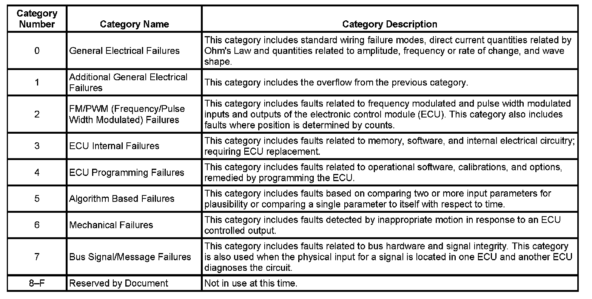
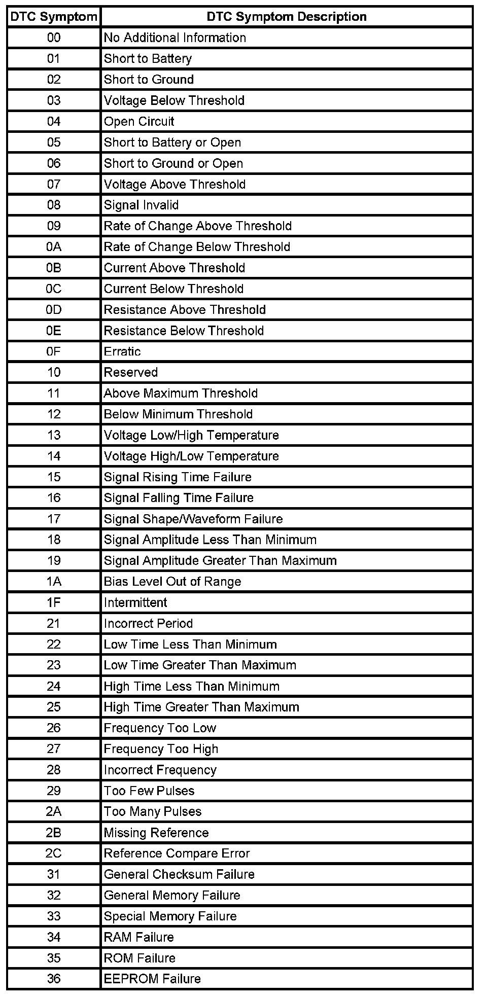
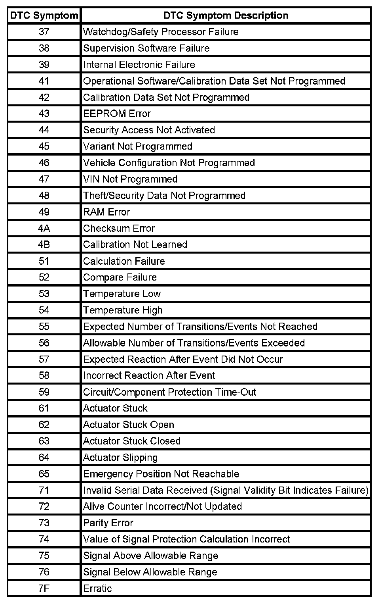

DTC Symptom Description
DTC SYMPTOM DESCRIPTION
A DTC symptom is a 2-digit number which adds additional detail to a DTC. The DTC symptom provides additional information without requiring a large increase in the number of new DTCs.
DTC Symptom Categories

The DTC symptom is made up of 2 alphanumeric digits. The first digit following the DTC indicates the DTC symptom category. There are 16 possible categories available in the range of 0 through the letter F. Currently there are 8 categories in use, 0 through 7. These 8 categories together with their definitions are given.
DTC Symptom Subtypes
the second digit of the DTC symptom is the subtype of the DTC symptom. These subtypes and their categories, together with their definitions, are given in the table. DTC symptom 00 is a special case. If 00 is displayed, only the base code number and its description apply. Information regarding the fault will be provided in the code setting criteria.
Example


The DTC symptoms associated with each DTC provide more information about the fault that caused that DTC. An example of a DTC displayed can be B1451 05 where the B1451 is the DTC, and 05 after the space represents the DTC symptom. While the DTC indicates that the fault is in the accessory power circuit, this DTC symptom indicates the circuit is shorted to battery or open. Another possible symptom for this code is B1451 02, where B1451 indicates the accessory power circuit, and 02 indicates the circuit is shorted to ground.